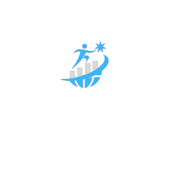

<div class="footer">
    <div class="footer-part-one">
        <div class="footer-logo">
            
        </div>
        <div class="footer-links">
            <ul>
                <li><a class="active" href="#">Home</a></li>
                <li><a href="#">About</a></li>
                <li><a href="#">Services</a></li>
                <li><a href="#">Contact</a></li>
                <li><a href="#">Feedback</a></li>
            </ul>
        </div>
    </div>
    
    <div class="footer-social">
        <a href="https://github.com/FaiqSarwar-2669" target="_blank">
            <button class="icons github"></button>
        </a>
        <a href="www.linkedin.com/in/faiqsarwar" target="_blank">
            <button class="icons linkedin"></button>
        </a>
        <a href="https://www.upwork.com/freelancers/~01a0f3d2de9b8ff222" target="_blank">
            <button class="icons upwork"></button>
        </a>
        <a href=" https://www.fiverr.com/faiqsarwar786" target="_blank">
            <button class="icons fiverr"></button>
        </a>
        <a href="https://www.freelancer.com/u/codefaiq786?frm=codefaiq786&sb=t" target="_blank">
            <button class="icons freelancer"></button>
        </a>
    </div>
</div>
